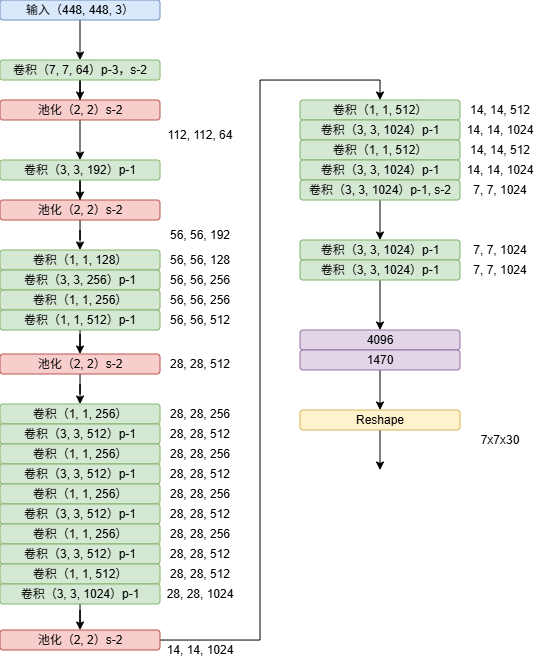
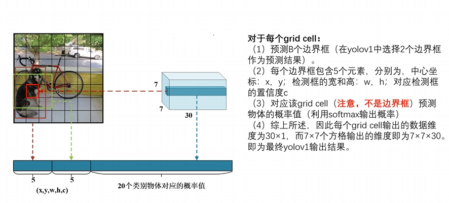
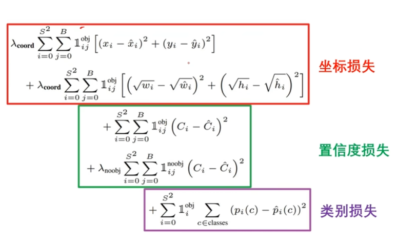

# YOLO 系列
YOLO（You Only Look Once）
# YOLOv1
输入是 448x448x3，最终输出是 7x7x30。对应原始图片对应区域的结果。就是所谓的将原始图片划分为 7x7 个小方格大小的图片。
其实这是一种一一映射 7x7 这样的小方格，7×7 个 cell，每个 cell 负责 “这个 cell 中心落在这里的目标” 的检测任务。
# x, y, w, h
x,y 是中心点坐标，w,h 是预测框的宽和高。
每个 bounding box 的 5 个参数：x,y,w,h,confidence,
x,y：框中心相对于当前 cell 的坐标（一般在 0～1）
w,h：框的宽高（通常相对于整张图像归一化）
confidence：这个框中有物体的置信度 × 该框与真实框的 IoU
每个 cell 的输出维度 = B×5+C
B×5+C=2×5+20=10+20=30
# 置信度
公式就是：
- Intersection Area：两个框相交的那一块区域的面积（交集）
- Union Area：两个框合起来覆盖住的总面积（并集）
这里所说的物体真实的 box 实际是不存在的，这只是模型表达自己框出了物体的自信程度。因此此时置信度的公式为:
# YOLOV1 损失函数
损失函数为：
# YOLOV1 总结
YOLO 非常快，因为将物体检测定义为回归问题，所以检测也不需要复杂组件。
YOLO 基于全图进行检测，所以不像晃动窗口和预选区技术，YOLO 中隐含着隐式编码的上下文信息。
YOLOv1 的准确率不够高，YOLO 在定位小物体上表现偏差，可以检测到的目标物体较少。
以上缺点将会在下面持续改进。
# 参考
- 【YOLOv1、YOLOv2、YOLOv3 目标检测算法原理与实战】https://www.bilibili.com/video/BV1WT421r72w